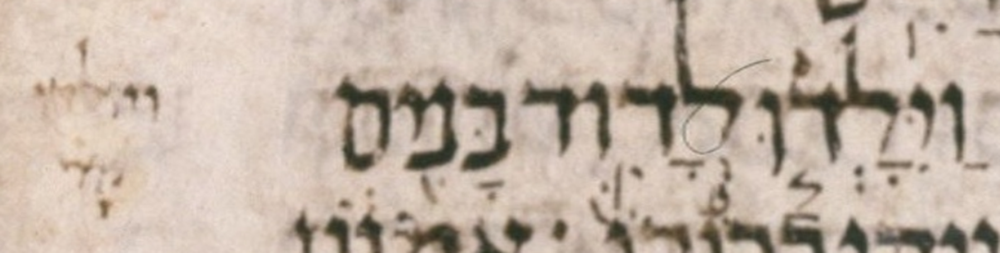

| bcv (link to tanach.us) | 2s3:2 |
| MPK | וַיִּ◌ָלְד֧וּ |
| qere | וַיִּוָּלְד֧וּ |
| at issue | וָּ |
| at issue English | added a dagesh to vav-qamats |
| folio col line | 169B 3 11 |
The MPK has no letter to carry a dagesh for the qere’s וָּ.
Unlike the dagesh, the qamats does not need a letter to carry it; it is allowed to be an orphan. It appears between the ḥiriq and the sheva (of the yod and ל respectively). Unlike the manuscript, our MPK shows that orphan qamats on a dotted circle.